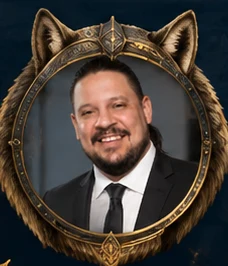

Lobo
Fundador y profesor
“No se trata solo de aprender inglés, sino de ganar confianza para usarlo en la vida real.”
- Licenciado en Educación con énfasis en idiomas
- Más de 15 años de experiencia docente
- Especialista en metodología comunicativa
- Apasionado por el desarrollo personal y profesional de sus estudiantes